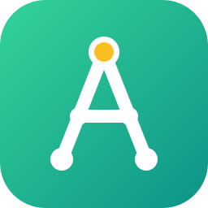

Every constraint, a solution.
Most planning tools give you a grid or an error. AIVOT gives you a grid and the reasoning: why this schedule, why an empty one, and — when no schedule exists — exactly which rules collide.
Every rule is either a hard requirement or a weighted preference. The engine satisfies the former, sacrifices the latter as little as possible — and reports every violation with its cost.
Empty result? AIVOT tells you no rule forces assignments. Infeasible? It lists the minimal core of conflicting rules, so you know precisely what to relax.
21 catalog rules across 8 families, plus a custom builder: count assignments per shift, person, day, week or sliding window — with filters — and bound the result. No code.
Publish rule sets that work, install the community's. Recipes are pure data — never code — with admin moderation built in.
Every schedule can become a public widget: one revocable <iframe> to paste into any website, intranet or wiki.
English and Italian across the UI, API messages, solver explanations, emails and the rule catalog itself. Adding a language is a dictionary, not a rewrite.
A path anyone can follow the first time, and skip around freely afterwards.
Rules are data (JSON in the database), translated into a CP-SAT model at runtime. The engine — Google OR-Tools — never changes; the variety lives in the catalog.
USER ── composes ──> ConstraintInstance JSON data in DB, never code │ ▼ runtime translation solver/handlers.py registry: type → ctx.limit(…) │ ▼ solver/engine.py two-phase CP-SAT │ 1) fast solve, full presolve │ 2) if infeasible → conflict core ▼ Run + explain.py assignments · violations · conflicts · explanation
The two-phase design matters: solving without assumption literals keeps CP-SAT's presolve at full strength (milliseconds on typical problems), while the second pass — run only on infeasibility — identifies the minimal set of rules to blame.
At least N people (optionally with a skill) on every shift.
At least N hours between shifts — midnight-crossing aware.
After a night, no morning the day after.
Night shifts spread evenly: max−min within tolerance.
Tutor and trainee always share the same shifts.
“Each person, at most 2 nights per sliding 7-day window, weekends only, in August.” Built from a form.
# clone, then:
docker compose up --build
| What | Where | Credentials |
|---|---|---|
| Platform | localhost:5173 | sign up, or demo / demo1234 |
| Backoffice | localhost:8001/admin | admin / aivot-admin |
| API | localhost:8001/api | token via /api/auth/login/ |
.env (emails through
Brevo, Google Sign-In, admin credentials) — and nothing breaks if
you configure none of it. See the
README
for the full reference.